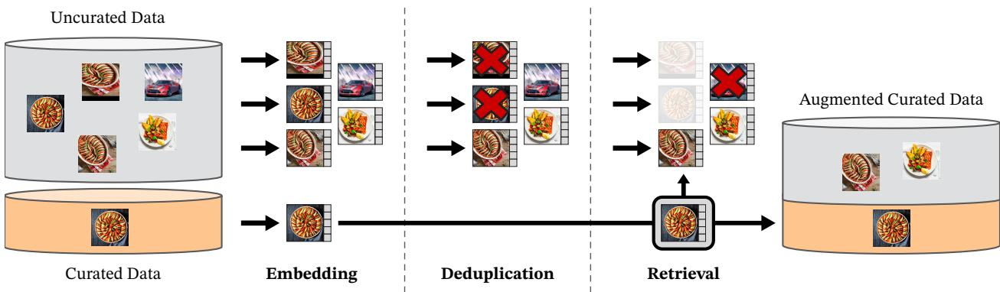
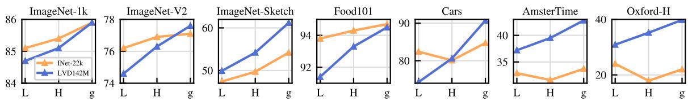
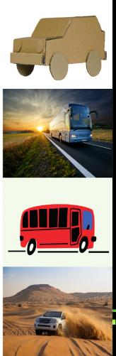
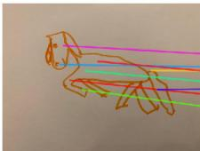
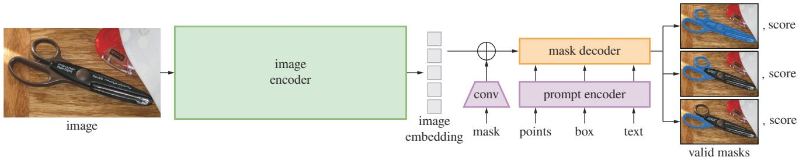
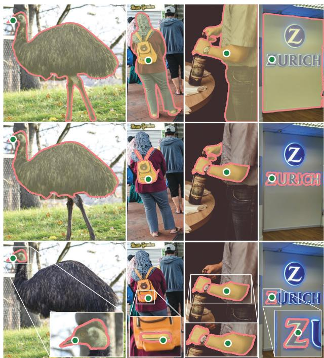

战场换了一块：不再是「学习式方法替换流水线的某一步」，而是「基础模型变成流水线里直接能调的零件」🧩
搞懂这一块和前几块叙事上的根本不同：0129–0146 讲的是「学习式方法替换流水线里的某一步」（匹配、检索、位姿），而 0147–0150 讲的是「学习式方法变成流水线里可以直接调用的零件」。本节先看两个最通用的零件：DINOv2（自监督通用视觉特征）与 SAM（可提示分割）。要讲清 DINOv2 的 LVD-142M、ViT-g 约 11 亿参数、用自监督而不是标签，SAM 的 SA-1B（11M 图 / 1.1B mask）与三重歧义设计（一个点提示输出 3 个 mask）；并且显式标出 DINOv2 正文公平性数字与它自己 Table 12 对不上的那处矛盾。
第六季 0121 WildGS-SLAM：它已经拿 DINOv2 的特征不确定度来剔动态物体——这就是「基础模型当零件」的现成例子，本课必须回链，别让 DINOv2 显得凭空冒出来。第六季 0114 动态场景三种打法与 0120 SNI-SLAM（高斯带语义标签）：前者用语义/特征剔动态，后者要语义标签，都是 SAM 这一类零件能直接补上的位置。第四季 0082 SuMa++：用语义剔动态的激光版先例。0129–0133 匹配块：SuperGlue/SiLK 用网络学特征，而 DINOv2 提供一个免微调、直接能用的通用特征——两条路要对照着看。
想象你在一间不熟悉的房子里找一个插座。你不需要先看说明书、也不需要预先记住插座长什么样——你脑子里有一套「通用的视觉本事」：不管插座是白的还是黑的、在墙上还是桌子后面、亮着灯还是关了灯，你都能认出来。这套本事是你在生活里看了无数东西自己攒出来的，没人给你一张一张贴标签。
DINOv2 干的就是这件事：让网络自己在几亿张没标签的图上学会这套通用视觉本事，然后把这份本事冻结（frozen）下来，交给别人当零件用。SAM 干的是另一件事：你随便点一下，它就给你圈出那个东西的轮廓。它俩都不关心几何、不输出位姿、也不建图——它们是两个「通用零件」。
术语先露脸：自监督（self-supervised）＝没有人工标签，网络靠「同一样东西的不同视角/不同遮挡」互相监督着学；冻结特征（frozen features）＝拿到特征后不再微调，直接喂给下游小模型（线性分类器、匹配器）就能干活；prompt（提示）＝你给模型的「要分割哪儿」的指示，可以是点、框、掩码或文本；mask（掩码）＝一张和原图同尺寸的二值图，白色就是「圈出来的区域」；[CLS] token＝ViT 里专门用来概括整张图的那个向量，对应本节说的图像级特征；patch token＝每个 14×14 小块的向量，对应像素级特征。
先把这个转折讲清楚。前面四块是这么一条线：
| 块 | 课号 | 它替换了流水线的哪一步 |
|---|---|---|
| 特征匹配 | 0129–0133 | 数据关联 / 前端特征（第一季 0004 那一环） |
| 场景识别与回环 | 0134–0140 | 检索（第一季 0014 假阳性铁律的心腹之患） |
| 端到端里程计 | 0141–0146 | 位姿（只吃掉了很窄的一段） |
| 视觉基础模型 | 0147–0150 | 它不替换某一步，它变成可以被任何一步调用的零件 |
「零件」这个词不是修辞。一个东西要能当零件，得满足三条：①通用（换个场景、换个任务照样能用）；②免微调（拿来就用，不用为你这个数据集再训一遍）；③接口干净（输入输出是什么，一目了然）。DINOv2 和 SAM 恰好各有一次「开箱即用」的公开发布（都是 Apache 2.0 开源），这是它们能变成零件的前提。
已经在用它的课：第六季 0121 WildGS-SLAM 用 DINOv2 的特征不确定度判断「这个像素可能不是真的」，从而在不需要深度、也不需要语义标签的情况下把走过的人从建图里剔掉——这就是「基础模型当零件」的现成案例，比本课早一季出现。第六季 0114 的三篇动态工作与 0120 SNI-SLAM 需要语义标签，而 SAM 正好能免训练补上这类标签；第四季 0082 SuMa++ 是激光侧「用语义剔动态」的先行者。所以本课不是新话题，而是把那些「已经在被悄悄调用」的零件正式摆上台面。
DINOv2 的输入输出简单得让人意外：输入一张 RGB 图，输出两组特征向量——图像级的 [CLS] token（概括整张图）和像素级的 patch token（每个 14×14 小块一个向量）。注意它输出的是特征向量，不是标签、不是框、不是图；也没有归一化到 0–1，是原始表征。主干是标准 ViT，最大的 ViT-g/14 隐藏维 1536、24 个头、约 11 亿参数。
自监督最怕的是「数据不够杂」。论文做了一条自动数据管线：先把已有的精选集（ImageNet-22k、ImageNet-1k、Google Landmarks 等）当查询，去一个 12 亿张的无标注池里按视觉相似度检索（每个查询取 4 个近邻），最后得到 LVD-142M＝1.42 亿张精选图。整条管线不依赖任何元数据或文本，纯靠视觉相似度。用 20 个节点 × 8 张 V100-32GB，不到 2 天就能产出这个数据集。

原图注（Fig. 3）：Overview of our data processing pipeline. Images from curated and uncurated data sources are first mapped to embeddings. Uncurated images are then deduplicated before being matched to curated images. The resulting combination augments the initial dataset through a self-supervised retrieval system.（数据管线总览：精选集与非精选集先各自映射成嵌入；非精选集先去重，再与精选图匹配；合成结果通过自监督检索系统扩充初始数据集。）
怎么看这张图：盯住中间那条「检索」的分岔：左边是人工整理好的精选集，右边是原始无标注池。原始池先去重（去掉近乎重复的图），再被当作「候选」与精选图做相似度匹配，被选中的才留下来。所以 1.42 亿不是随便抓来的，是被「筛选」出来的——这也解释了论文为什么说「没有精选数据就很难有好特征」。
要记住的一句话：DINOv2 的燃料不是「更多图」，而是「更挑的图」——数据管线和网络结构一样是贡献点。
思路叫「教师—学生」：同一张图的两种视角分别送进学生网络和教师网络（教师是学生的指数滑动平均 EMA，不是另外训练出来的），然后要求学生输出的分布去逼近教师的分布。因为「这是猫还是狗」的标签根本不存在，能当监督信号的只有「两边的输出要一致」——这就是自监督。论文把图像级的 DINO 交叉熵损失与 patch 级的 iBOT 损失合起来，并加了 SwAV 式中心化（Sinkhorn-Knopp）与 KoLeo 正则；训练效率相对 iBOT 约 2× 更快、只用约 1/3 显存。
这句话在说什么：第一项是「图像级」的：把教师网络输出的概率分布 $P^{\text{教师}}$ 当答案，让学生网络的分布 $P^{\text{学生}}$ 去贴合它——因为没人给标签，只能拿「教师的看法」当答案，所以叫自监督。第二项是「patch 级」的：故意遮住图上的若干小块，要求学生把被遮住那块的表示猜回来（iBOT 那一套），这样特征才在像素级也靠得住。注意指数的写法是示意，原文是 DINO 交叉熵 + iBOT 两项的组合，不是这一个式子。

原图注（Fig. 4）：Model scale versus data scale. Evolution of performance as a function of model size for two different pretraining datasets: ImageNet-22k (14M images) and LVD-142M (142M images). The ViT-g trained on LVD-142M surpasses the ViT-g trained on ImageNet-22k on most benchmarks.（模型规模对数据规模：同一横轴是模型大小，两条线分别是 1400 万张的 ImageNet-22k 与 1.42 亿张的 LVD-142M；在 LVD-142M 上训出的 ViT-g 在多数基准上超过在 ImageNet-22k 上训出的 ViT-g。）
怎么看这张图：横轴是模型从小到大，纵轴是性能，两条线分别是两个数据集。要看的不是「越大越好」（这谁都知道），而是两条线之间的落差：同样的模型大小，数据喂对了的那条明显更高。这说明在自监督里，「数据选得好」和「模型变大」是两件独立的事，不能互相替代。
要记住的一句话：这一块的账要分开算——模型规模 11 亿参数是一笔，1.42 亿精选图是另一笔，两笔都花出去才有「开箱即用」。
论文的核心卖点是「frozen 特征在图像级与像素级都超过当时最好的 OpenCLIP，而且不用微调」。图像级好理解（分类、检索）；像素级才是 SLAM 关心的——patch token 可以直接当稠密特征用，做匹配、做对应。另外还有一个训练细节值得记：高分辨率阶段把图升到 518×518 短训一下，像素级任务明显变好。

原图注（Fig. 1）：Visualization of the first PCA components. We compute a PCA between the patches of the images from the same column (a, b, c and d) and show their first 3 components. Each component is matched to a different color channel. Same parts are matched between related images despite changes of pose, style or even objects. Background is removed by thresholding the first PCA component.（前三个 PCA 主成分的可视化：同一列的图之间对 patch 做 PCA，三个主成分分别映射到三个颜色通道。尽管姿态、风格甚至物体都变了，相关的图之间「相同的部位」还是对上了；背景用第一主成分阈值去掉。）
怎么看这张图：这是全篇最能说明「特征通用」的一张。每一列里几张图是同一类东西的不同姿态、不同风格、甚至不同个体，把它们的 patch 特征做 PCA 后映射成颜色，你会发现同色区域落在同一个语义部位上（都是「眼睛」、都是「轮子」、都是「把手」）。这说明网络学到的不是像素颜色，而是「这个部位是干什么用的」。
要记住的一句话：通用特征的意思是——不用重新训练，它已经知道「哪些部位是同一类部位」；这正是它能被别的系统当零件调用的原因。

原图注（Fig. 10）：Matching across images. We match patch-level features between images from different domains, poses and even objects that share similar semantic information. This exhibits the ability of our model to transfer across domains and understand relations between similar parts of different objects.（跨图匹配：在不同领域、不同姿态、甚至只是语义相近的不同物体之间做 patch 级特征匹配。这展示了模型跨域迁移、以及理解不同物体「相似部位之间关系」的能力。）
怎么看这张图：连线跨越了灰度图、彩色图、不同物种、不同姿态。要盯着看的是连线有没有乱——如果特征只记住了颜色和纹理，跨域就会连错；这里能连对，说明特征抓的是语义部位。对 SLAM 来说这正是「不换模型就能跨场景用」的底气。
要记住的一句话：DINOv2 的匹配本事是「跨域」的——它给的不是某个数据集的特征，而是「什么部位像什么部位」的常识。
SAM 的队伍比 DINOv2 还大一截：它一次性交出了三件东西——可提示分割这个新任务、SAM 模型本身、以及数据引擎产出的 SA-1B 数据集（1100 万张授权高清图、11 亿个 mask，其中 99.1% 是全自动生成的）。数据引擎分三阶段：辅助人工阶段产出 430 万 mask / 12 万图；半自动阶段再加 590 万 / 18 万图；最后的全自动阶段用 32×32 的规则网格点去提示，一次刷出 1100 万图、11 亿 mask。质量抽查（随机 500 张人工校对）显示 94% 的自动 mask 与人工标注 IoU 超过 90%——作为参照，人工之间的标注一致性只有 85–91%。
模型被刻意拆成三块：图像编码器（MAE 预训练的 ViT-H，最贵，但每张图只跑一次、结果可复用）、prompt 编码器（点/框用位置编码 + 类型嵌入、文本用 CLIP 文本编码器、掩码用卷积嵌入）、mask 解码器（两类 cross-attention 的 Transformer 解码块 + 动态 mask head）。这样拆的好处在数字上很直观：图像编码只做一次，之后 prompt + 解码在浏览器 CPU 上只要约 50 毫秒。损失是 focal loss 与 dice loss 的组合，训练时每个 mask 随机采 11 轮 prompt。

原图注（Fig. 4）：Segment Anything Model (SAM) overview. A heavyweight image encoder outputs an image embedding that can then be efficiently queried by a variety of input prompts to produce object masks at amortized real-time speed. For ambiguous prompts corresponding to more than one object, SAM can output multiple valid masks and associated confidence scores.（SAM 总览：重量级图像编码器输出图像嵌入，随后可被各种输入 prompt 高效查询，以摊薄后的实时速度产出物体掩码。对于对应多个物体的歧义 prompt，SAM 可以输出多个合法掩码及各自的置信度。）
怎么看这张图：顺着箭头走一遍就懂了这个架构的用意：上半部分是「重」的（图像编码器），下半部分分出去的三条支路是「轻」的（点、框、掩码/文本提示）。因为上半部分只跑一次，所以不管你换多少个提示、圈多少个东西，边际成本都很低——这就是论文说的 amortized real-time（摊薄后的实时）。
要记住的一句话：SAM 的快不是因为它小，而是因为它把「重活」和「反复问」这两件事拆开了。
这是 SAM 最容易被漏掉、也最关键的一个设计。你在一张照片上点一下一个人身上的衣服，问「分割这里」——可是「这里」到底指什么？那件衣服？那个人？还是整张画面里的人加车加背景？三个答案都合法，问题本身有歧义。
SAM 的处理方式不是硬猜一个，而是单次预测直接输出 3 个 mask，每个带一个「预测 IoU」作置信度，让下游自己挑。论文用这个设计在 23 个数据集的单点分割评测里，有 16 个超过当时最强的单点方法 RITM，最高领先 47 IoU。这也解释了为什么评测里要专门画「oracle 圈」——单点提示可能对不上某一份真值，但 SAM 的三个预测里往往有一个是对的。

原图注（Fig. 3）：Each column shows 3 valid masks generated by SAM from a single ambiguous point prompt (green circle).（每一列展示的是：SAM 由同一个有歧义的点提示（绿圈）生成的 3 个合法掩码。）
怎么看这张图：竖着看一列就是一问三答：照片没变、绿点没变，三行的 mask 粒度却不一样——有的圈得很大（整个物体甚至带周边），有的圈到中等部件，有的只圈一小块。这不是模型「拿不准」，而是它把「你要多大一块」这个歧义显式地交回给你。横着看几列，会发现不同物体的歧义程度不同——有的物体本身就是小物件，三答差别不大。
要记住的一句话：SAM 的三重歧义设计＝不替你决定「该多大」，而是给你三个粒度 + 置信度，让你按用途挑。这是它能直接当零件的前提。
照本项目的规矩，作者自述的弱点要写出来：SAM 容易漏掉细结构、偶尔产生小碎块；边界不如专门的 zoom-in 类方法锐利；纯图像编码器整体并不实时（实时的是「提示 + 解码」那一步）；文本提示比较初步、不够稳健。在 SLAM 里用得最多的是「框或点 → 物体掩码」这条最稳的路径。
关键是要说清：这两个东西都不给你几何。DINOv2 给特征向量，SAM 给掩码。它们不输出位姿、不输出深度，所以它们不会「替换」SLAM 的哪一步，而是被哪一步调用。
图像级：做检索 / 回环检测的全局描述子。
像素级：做稠密匹配，或当替代手工特征的前端。
已经发生的例子：第六季 0121 WildGS-SLAM 用它的特征不确定度剔动态，不需要深度也不需要语义标签。
用检测器给的框、或直接点提示，得到物体掩码，喂给：语义地图、物体级地图、动态物体剔除。
和第四季 0082 SuMa++（语义剔动态的激光版）、第六季 0120 SNI-SLAM（高斯带语义标签）是同一用途。
两者的公开版都是 Apache 2.0，且论文反复强调「零样本 / 免微调」——这是它们能当「零件」而不是「又一篇要复现的论文」的工程前提。
DINOv2：图进、特征出。
SAM：图 + 提示进、掩码出。
没有隐藏状态、没有需要配合的其它模块——这才是「零件」的含义。
顺带说一句第 2 节那张表第三行的道理：为什么零件化比「替换一步」的影响更大？因为替换某一环，你得先有一整套流水线；而零件是可以塞进任何一条流水线的。这也是为什么 0147 这一课放在「战场」的最后——它是前面所有工作的公共基础设施。
这张图在画什么：左边是同一把椅子在晴天、雨天、雪天、夜晚各拍的一张照片（相机位置、光照、天气、季节全变）；右边是这些照片在「特征向量空间」里的落点——红色四个点几乎挤在一起，而另一个不相干的东西（灰点）落在很远的地方。
怎么看这张图：① 先看左边的变化有多大：同一件东西，像素几乎完全不同；② 再看右边界里的距离：四个红点之间的间距远小于它们到灰点的距离，说明网络把「同一件东西的不同拍法」压成同一处；③ 关键是没有任何标签参与——没人告诉网络「这四张是同一把椅子」，是它自己对出来的（下一张图讲怎么做到的）。
要记住的一句话：「通用特征」的意思是——特征空间里的距离反映的是「是不是同一类东西」，而不是「像素像不像」；这就是它换个场景还能用的原因。
这张图在画什么：左边是同一间屋子的两张照片（视角 1 站在原处、视角 2 往前走了一步），中间是同一个网络（共享权重），右边是两幅特征图——同一个格子位置的颜色是一样的，表示网络认为它们对应同一个东西。
怎么看这张图：① 注意中间的方框只有一个，两张图走的是同一套权重，不是两个模型；② 右边两张特征图逐格比对：相同的颜色出现在相同的位置，说明「同一个物体」在两幅图里落到了同一个表示上；③ 最要紧的是整张图里没有一个「标签」——监督信号就是「两种视角的输出要一致」，再叠加「被遮住的小块要猜回来」这一项。
要记住的一句话：自监督 = 把「输入自己的另一面」当成答案；不用人来贴标签，也能把「什么是同一个东西」这条常识灌进网络。
这张图在画什么：最左是输入——一张街上骑车的照片，加一个绿点提示（旁边那个黑色箭头就是「点一下」的光标）；右边三格是 SAM 对同一个点给出的三个答案，橙色区域逐格变小：从「骑手 + 自行车」到「骑手的人形」再到「只圈上衣」。
怎么看这张图：① 三格里照片和绿点完全没变，变的只有 mask 的粒度——这不是模型答错，是问题本身有歧义；② 灰色的部分是「没被选中」的，橙色是「被选中的」，一眼能看出三档粒度；③ 真正落地时，网络会同时给这三块 mask 各配一个置信度（预测 IoU），下游按用途挑——要做语义地图大概选「局部」，要剔动态物体大概选「整体」。
要记住的一句话：SAM 的强不是「更懂你要什么」，而是它把「你要多大一块」这件说不清的事，变成三个可以自己挑的选项。
下面哪句最准？
正确。DINOv2 的卖点是 frozen 特征——图像级与像素级都超过当时的 OpenCLIP，而且不需要为下游任务微调。参数大（ViT-g 约 11 亿）和数据多（LVD-142M）是前提，但真正让它成为「零件」的是「拿来就用、接口干净」：图进、特征出。这正是 0147–0150 这一块与前四块的根本差别——不是替换某一步，而是被任何一步调用。
不对。参数多只是它变强的原因之一，不是它能当零件的原因。论文里恰恰强调了另一面：训练完还要蒸馏成一系列小模型，并用 high-resolution 短训阶段提升像素级任务；而且它发布的价值在于 frozen（免微调）可用。若只记住「因为它大」，就漏掉了「零件化」这件事的本质——接口干净、免微调、可被任意流水线调用。
论文第 8.1 节在讨论地理与收入公平性时，正文这样写：非洲地区的性能比欧洲低 25.7%，高收入与低收入家庭之间差 31.7%。但它自己的 Table 12（Dollar Street 数据集，16,073 张图、289 个家庭、54 个国家，识别 94 个概念）实测是：
| 对照项 | 较弱的组 | 较强的组 | 正文声称 | 按表格算 |
|---|---|---|---|---|
| 地区 | Africa 74.0 | Europe 89.7 | 低 25.7% | 相对差约 17.5%（绝对差 15.7 个点） |
| 收入 | low 67.4 | high 90.5 | 差 31.7% | 相对差约 25.5%（绝对差 23.1 个点） |
两种算法都对不上正文那两个数。所以本课的立场是：引用公平性数字时以表格为准，并把矛盾显式标出。表格给出的其它数字是：Asia 81.6、Americas 86.2、medium 83.3；作为对比，同为大规模自监督的 SEERv2 分别是 Africa 65.9、low 59.7、high 86.6——所以 DINOv2 确实比 SEERv2 更公平一些，但它确实仍然偏向西方国家与富裕家庭，这一点论文自己也承认。
为什么这处矛盾值得花一段讲：它示范了本项目一直强调的那件事——「诚实标注不确定性」不是客套，而是技术判断的一部分。如果直接把 25.7% 抄进课件，读者会以为 DINOv2 的地区差距比实测大得多；如果反过来因为「表格更好看」就只引表格，又会掩盖论文自己承认的偏差。正确做法是把两套数字都摆出来，并说明以哪个为准、为什么。
「通用零件」不是天上掉下来的。论文 Table 14 给了碳足迹：DINOv2-g 在 A100-40GB（400W）上跑了 22,016 GPU-hours，PUE 取 1.1，总耗电 9.7 MWh，碳排放 3.7 tCO₂eq。训练用的是 A100 + PyTorch 2.0，还自己实现了 FlashAttention。
这笔账要记住的意义是：你现在能「免费」调用的零件，代价是别人一次性付掉的。它把成本从「每个使用者各付一次」变成了「一次付清、大家共享」——这是基础模型在工程上真正的价值主张。但也意味着如果你要自己训一个，门槛是两万多个 GPU 小时。
仍然偏向西方国家、富裕家庭（见 7.1）；需要精选数据才有好特征——数据管线本身是贡献点，不是可选项。
易漏细结构、偶发小碎块；边界不如 zoom-in 类方法锐利；纯图像编码器整体非实时（实时的是提示+解码那一步）；文本提示较初步、不稳健。
一句提醒：这两个零件都不输出几何。它们不会替你解决尺度、不会替你算位姿。下一节 0148 DUSt3R 开始，我们才进入「几何」这一侧的基础模型。
自监督的意思是：监督信号来自数据自己，而不是人来贴的标签。DINOv2 的具体做法是教师—学生结构：同一张图的两种视角分别送进教师网络（学生权重的 EMA，不单独训练）和学生网络，然后要求学生输出的分布去逼近教师的分布。
为什么可行：因为「同一件东西在不同视角下应该是同一个东西」这条常识本身就是免费的监督信号。标签告诉你「这是猫」，而自监督告诉你「这两张图的这一块应该是同一个东西」——后者不需要人工标注，但足以把「什么部位像什么部位」学进网络。再叠加 patch 级的 iBOT 损失（遮住小块要求学生猜回来），特征在像素级也靠得住。
为什么是三个：因为点提示本身有歧义——你点在一个人身上，可能指那件衣服、可能指这个人、也可能指「画面里这一个整体」。三个答案都合法，而模型没法知道你的用途。硬猜一个必然在某些用途上出错，所以论文选择把三种粒度都给出，各带一个预测 IoU 置信度。
为什么在 SLAM 里更方便：因为 SLAM 里的不同任务要的粒度本来就不同。做动态物体剔除（对照 0121 WildGS-SLAM、0114 动态三篇）通常希望圈得大一点、把整个会动的东西都盖住；做语义 / 物体级地图（对照 0120 SNI-SLAM）则希望精确到物体或部件。三个候选项省掉了「为了不同粒度再训一个模型」的麻烦——这就是「零件」的价值：把选择权留给下游，而不是替下游拍板。
不矛盾。「感知前端零件」说的是它提供什么：图像级 / 像素级的特征向量，不含几何、不含位姿。而 0121 的用法是在这些特征之上再做一步判断：把「同一个空间位置在不同帧里的特征不一致」当作「这里的特征不确定度偏高」的信号，从而判断这个像素可能不是真的（比如一个走过的人）。
也就是说，WildGS-SLAM 并没有让 DINOv2 去解决几何问题，而是把特征当输入、把不确定度当输出——DINOv2 在这个组合里仍然是零件，只是被接在了一个更聪明的判断模块前面。这条链正好说明「基础模型当零件」的生产方式：零件提供表示，系统设计者决定怎么用这份表示。
选 22,016 GPU-hours（A100-40GB、400W），或者换算后的 9.7 MWh 耗电 / 3.7 tCO₂eq 碳排放。理由：单纯说「1.42 亿张图」或「11 亿参数」只传达了规模，没传达成本；而 GPU-hours 是一个可以和你自己的机器直接换算的量——你把它除以手头的显卡数，就大致知道「自己复现一遍要多久」。
更重要的理由是它揭示了基础模型的商业逻辑：成本从「每个使用者各付一次」变成「一次付清、大家共享」。你之所以能「免费用一个通用零件」，是因为有人已经把这两万多小时花掉了。所以第 7 节说这笔账要写进本子——它既解释了零件的价值，也解释了自己复现的门槛。